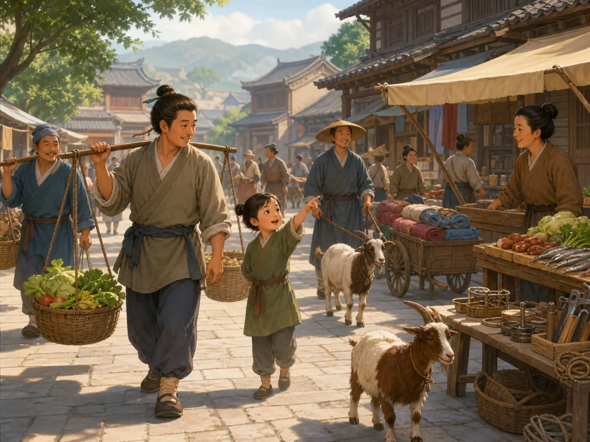
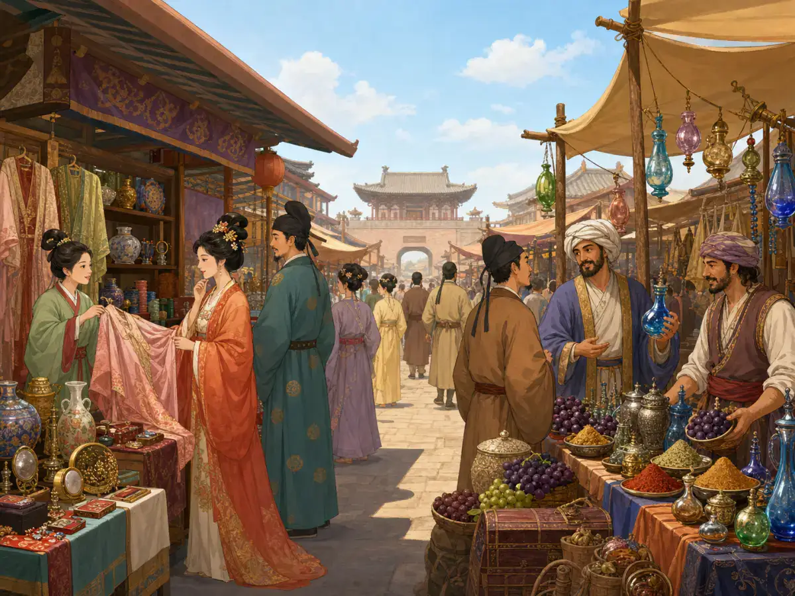
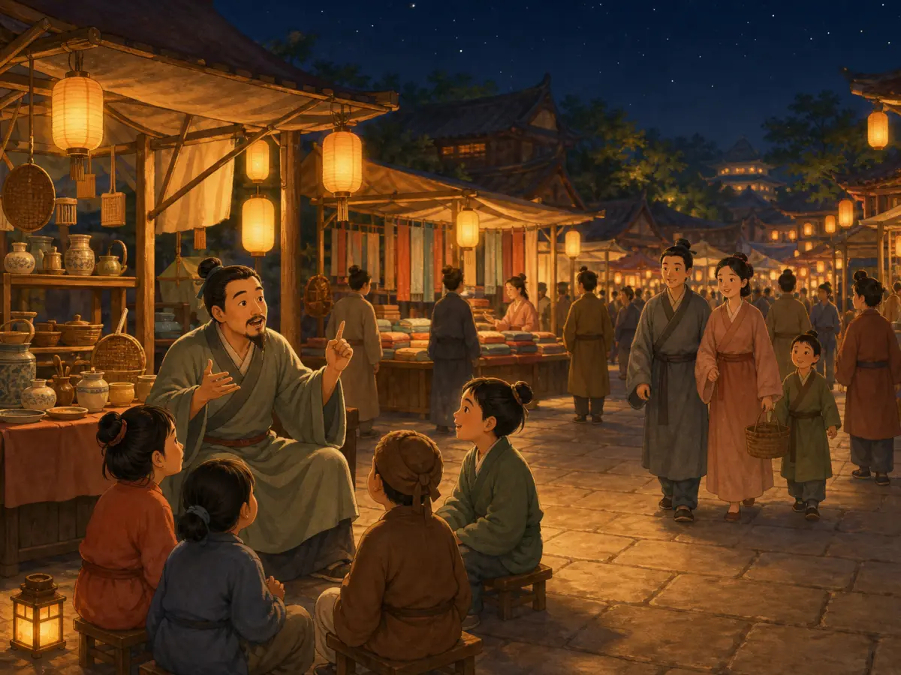
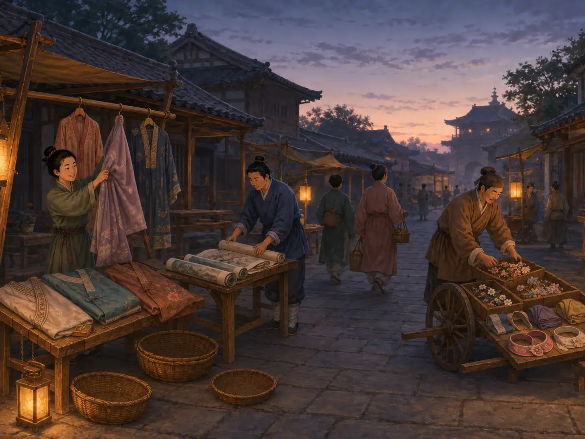

古代市场：从赶集日到夜市
Ancient Markets: From Market Day to Night Market
Page 1
等到赶集那一天
Wait for Market Day

Marketgoers carry baskets into a street lined with vegetables, cloth, and everyday goods.
想象住在一个村子里，家里需要买一个新篮子、一块布，或者一些盐。附近不一定有一排每天早晨都开门的店铺。在中国许多乡村，人们很早就有了另一种办法：赶集。
平常的日子，小镇也许安安静静。到了约好的集日，附近村庄的农民和手艺人带着东西赶来，走乡串镇的商贩也来了。临时摊位摆起来，想买东西的人聚到一起，平时住得很远的人，这一天也能在同一个地方碰面。集市散了以后，许多摊位又会消失，大家等着下一次赶集。
不同地方的集日并不完全一样，可办法很聪明：不用让所有商贩天天守在这里，只要大家知道哪一天来就行。这样的定期集市，在中国乡村延续了很久。
可是，来到一座巨大的都城，市场又会变成另一副模样。
Imagine living in a village where you need a new basket, a piece of cloth, or some salt. There may not be a row of shops nearby that opens every morning. In many parts of rural China, people instead gathered at periodic markets on certain days.
On an ordinary day, a town might be quiet. On market day, farmers and craftspeople came in from nearby villages carrying things to sell. Traveling merchants arrived too. Stalls appeared, buyers came looking for what they needed, and people who normally lived miles apart suddenly met in the same place. Then market day ended, and many of the temporary stalls disappeared again.
Different places followed different schedules. The important idea was simple: instead of keeping every seller in one place every day, everyone knew when to meet. Periodic markets became a long-lasting part of life in the Chinese countryside.
But a huge capital city could organize shopping very differently.
Page 2
围墙里面的市场
Markets Behind Walls

Traders display cloth, vessels, spices, and fruit inside a marketplace entered through a gate.
一千二百多年前，Táng cháo · 618年至907年的中国朝代。Cháng'ān · 中国古代都城，位置在今天的西安。有两座很大的官设市场：东市和西市。长安本身就是一座规划得非常整齐的城市，一块块居民坊有围墙，东市和西市也各自占据大片城区。
这里不是商贩想在哪里摆摊就在哪里摆摊。市场有人管理，什么时候开市、什么时候闭市，也有规定。
对当时的人来说，去市场要找对地方，也要赶对时间。
不过，到了唐代后期，买卖已经越来越难只待在规定好的市场围墙里面。街道和居民区里出现了更多店铺，夜间做生意的地方也慢慢多起来。再过几百年，来到Sòng cháo · 中国历史上从960年延续到1279年的朝代。的大城市，市场就更热闹了。
More than 1,200 years ago, the Táng cháo · 唐朝 · The Chinese dynasty that lasted from 618 to 907. of Cháng'ān · 长安 · An ancient Chinese capital located in present-day Xi'an. had two enormous official marketplaces, the East Market and the West Market. The city itself was carefully planned, with walled neighborhoods laid out along broad streets, and the two markets occupied large blocks of their own.
These were not markets that simply spread wherever sellers felt like setting up. Officials supervised trade, and the markets followed rules about where and when business could happen. Their gates opened and closed on a schedule.
For a shopper, the idea was clear: the market was a particular place, and it had a particular time.
Over the later Tang period, however, buying and selling increasingly appeared outside the old market compounds. Shops and stalls pushed into streets and neighborhoods, and night trading became harder to keep inside the old rules. A few centuries later, in the great Song cities, the change was impossible to miss.
Page 3
天黑了，市场还没睡
The Market Stays Up Late

Lanterns light the shops, food stalls, and crowds still moving through a night market.
大约九百年前，一位叫Mèng Yuánlǎo · 记录北宋开封城市生活的《东京梦华录》作者。的人写了一本Dōngjīng Mèng Huá Lù · 孟元老回忆北宋开封城市生活的著作。，回忆北宋都城Kāifēng · 北宋的都城，也是一座商业繁盛的城市。的生活。他笔下的开封到处都有店铺、食摊、酒楼、车马和来来往往的人。有些地方到了晚上也不收摊。
孟元老记载，有的夜市一直开到深夜，最热闹的地方甚至可以继续做生意。就算冬天刮着大风、下着雨雪，街上还是有夜市。有人卖熟食，有人卖点心、果子和茶，天已经黑了，城市里却还有很多人在买东西。
而且，夜市刚安静下来没多久，另一批生意又开始了。
天还没有完全亮，有的店已经点起灯烛。卖粥和点心的人开始准备食物，装着货物的车往城里走，街上的小贩也开始吆喝起来。开封甚至有一种市场，名字听起来特别奇怪。
Around nine hundred years ago, a writer named Mèng Yuánlǎo · 孟元老 · The writer who remembered Northern Song Kaifeng in the Dongjing Meng Hua Lu. remembered the streets of Kāifēng · 开封 · The Northern Song capital, famous for its busy streets and markets., the Sòng cháo · 宋朝 · The Chinese dynasty that lasted from 960 to 1279. capital. His book, Dōngjīng Mèng Huá Lù · 《东京梦华录》 · Meng Yuanlao's vivid account of urban life in Northern Song Kaifeng., is full of shops, food stalls, carts, bridges, restaurants, and crowds. Some of the liveliest markets did not stop when the sun went down.
Meng Yuanlao wrote that certain night markets continued far into the night. In busy places, selling could go on even longer. He remembered night stalls operating even during cold, windy, snowy weather. Sellers offered cooked foods, cakes, fruit, tea, and all kinds of things for people who were still out in the city.
Then, before the city had fully reached morning, another round of business began.
Meng described shops lighting lamps before dawn and people already coming into the markets. Food sellers prepared porridge and snacks, carts brought goods in through the gates, and vendors began calling out along the streets. In some places, there was even a market with a wonderfully strange name.
Page 4
“鬼市子”
The “Ghost Market”

As dawn begins, sellers pack away clothes, pictures, and flower ornaments before the “ghost market” disappears.
有一种市场在天还黑着的时候就开了。商贩点起灯，卖衣服、图画、花饰和其他东西。等到天亮，这个市场也就散了。人们把它叫作“鬼市子”。
这里当然不是在卖鬼。它在黑夜里出现，到了早晨又消失，这个名字倒是很容易让人记住。
从赶集日到长安的东市、西市，再到宋代开封的夜市和天亮前的“鬼市子”，人们做买卖的时间和地方变得越来越多。到了开封这样的大城市，市场已经不一定只待在一堵围墙里面，它可以沿着街道展开，也可以一直热闹到夜里。
古书记载，街上的商贩还会一边走一边叫卖。我们虽然听不到九百年前真正的声音，却可以从那些文字里看到一座正在醒来的城市：车轮经过街口，店里亮着灯，人们提着篮子走来走去，小贩的声音从街上飘过。
等到太阳真正升起来时，“鬼市子”已经散了。城市里新一天的买卖，却才刚刚开始。
One Kaifeng market opened while the sky was still dark. Lamps were lit before dawn, and sellers traded clothes, paintings, flower decorations, and other goods. When daylight arrived, the market broke up. People called it the “ghost market.”
There were no ghosts involved. The market earned its eerie name because it appeared in the darkness and was gone by morning.
That name tells us just how far city commerce had stretched. A shopper no longer always had to wait for one special market day or enter one large market compound in the afternoon. In Song Kaifeng, buying and selling could spill into streets, continue after dark, and begin again before sunrise.
The city had sounds as well as sights. Old accounts describe sellers calling out as they moved through the streets. We do not need to invent their exact words to picture what that meant: footsteps, cart wheels, shop lights, people carrying baskets, and voices announcing that something was for sale.
By the time the morning sun reached the street, the “ghost market” was already disappearing. Elsewhere in the city, another day of buying and selling was just beginning.